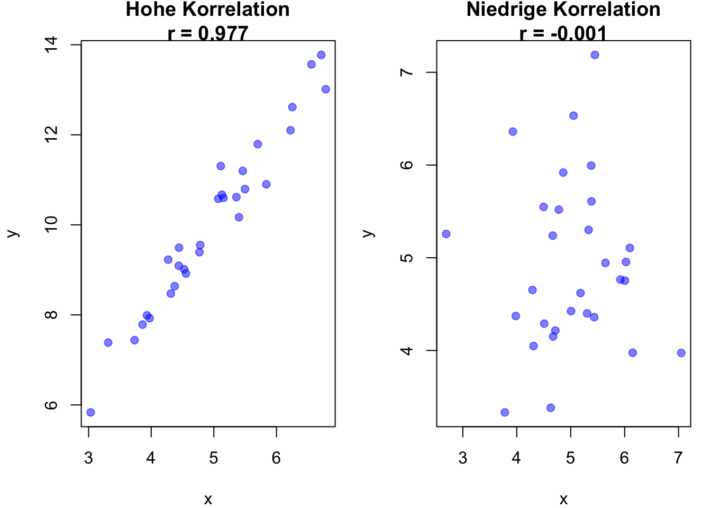
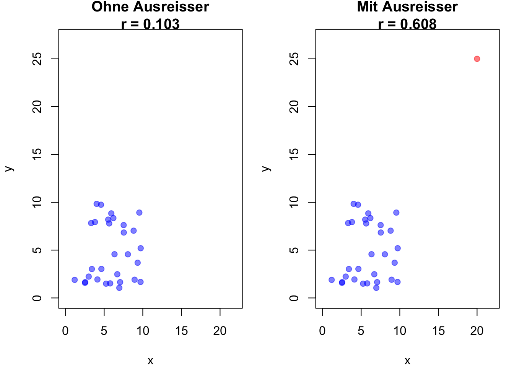

\(\rho\) ist der Standardbuchstabe für den Korrelationskoeffizienten der Grundgesamtheit.
\(r\) ist der Standardbuchstabe für den Korrelationskoeffizienten der Stichprobe.
\(\mu_x\) und \(\mu_y\) sind die Mittelwerte der Variablen \(X\) und \(Y\).
\(N\) ist die Anzahl der Beobachtungen (wird hier gross geschrieben da es sich um die Grundgesamtheit handelt)
\(X_i\) und \(Y_i\) sind die beobachteten Werte der Variablen \(X\) und \(Y\) für die \(i\)-te Beobachtung.
Beispiel
Wir ergänzen unsere Daten aus Tabelle 7.1 um eine zweite Variable, die Lernzeit pro Woche (h), um zu untersuchen, ob ein Zusammenhang zwischen Lernzeit und Prüfungsnoten besteht.
Ergebnis:\(\rho_{X,Y} \approx 0.997\), was auf eine sehr starke positive Korrelation hindeutet.
5. Interpretation
Da \(\rho_{X,Y} \approx 0.997\) nahe an 1 liegt, bedeutet das, dass Studierende, die mehr Lernzeit investiert haben, tendenziell bessere Noten erzielt haben. (Aber: wir können nicht sagen, dass die Lernzeit die Note beeinflusst hat, sondern nur, dass beide Variablen tendenziell gemeinsam variieren.)
Das zeigt eine fast perfekte positive Korrelation zwischen den beiden Variablen.
Wo \(X_i ^d\) die Abweichung von \(X_i\) vom Mittelwert \(\mu_x\) der Variable \(X\) ist und \(Y_i ^d\) die Abweichung von \(Y_i\) vom Mittelwert \(\mu_y\) der Variable \(Y\) ist.
Problem: Die Summe der Produkte der Abweichungen ist abhängig von der Stichprobengrösse \(N\).
Division durch Stichprobengrösse Kovarianz zwischen \(X\) und \(Y\)
Wenn wir Daten plotten, können wir häufig Korrelationen auch visuell schon relativ gut schätzen.
Code
# Set seed for reproducibilityset.seed(123)# Hohe Korrelation (r nahe bei 1)x_high <-rnorm(30, mean =5, sd =1)y_high <-2* x_high +rnorm(30, mean =0, sd =0.5)r_high <-cor(x_high, y_high)# Niedrige Korrelation (r nahe bei 0)x_low <-rnorm(30, mean =5, sd =1)y_low <-rnorm(30, mean =5, sd =1)r_low <-cor(x_low, y_low)# Plots nebeneinanderpar(mfrow =c(1, 2), mar =c(4, 4, 2, 1))# Plot mit hoher Korrelationplot(x_high, y_high, main =paste("Hohe Korrelation\nr =", round(r_high, 3)), xlab ="x", ylab ="y", pch =19, col =rgb(0, 0, 1, 0.5))# Plot mit niedriger Korrelationplot(x_low, y_low, main =paste("Niedrige Korrelation\nr =", round(r_low, 3)), xlab ="x", ylab ="y", pch =19, col =rgb(0, 0, 1, 0.5))

Beispiele für Pearson-Korrelationen
Die visuelle Darstellung erlaubt es uns, die Sensitivität des Pearson-Korrelationskoeffizienten gegenüber Ausreissern zu betrachten. Dafür fügen wir den Daten einen Ausreisser hinzu und sehen, wie sich der Korrelationskoeffizient drastisch verändert.
Code
# Berechnung des Pearson-Korrelationskoeffizienten# Daten ohne Ausreisser generierenx <-runif(30, 1, 10)y <-runif(30, 1, 10)# Korrelationskoeffizient ohne Ausreisserr_no_outlier <-cor(x, y)# Daten mit Ausreisser hinzufügenx_outlier <-c(x, 20)y_outlier <-c(y, 25)# Pearson-Korrelationskoeffizient mit Ausreisserr_with_outlier <-cor(x_outlier, y_outlier)# Plots nebeneinanderpar(mfrow =c(1, 2), mar =c(4, 4, 2, 1))# Plot ohne Ausreisserplot(x, y, main =paste("Ohne Ausreisser\nr =", round(r_no_outlier, 3)), xlab ="x", ylab ="y", pch =19, col =rgb(0, 0, 1, 0.5), xlim =c(0, 22), ylim =c(0, 27))# Plot mit Ausreisserplot(x_outlier, y_outlier, main =paste("Mit Ausreisser\nr =", round(r_with_outlier, 3)), xlab ="x", ylab ="y", pch =19, col =c(rep(rgb(0, 0, 1, 0.5), 30), rgb(1, 0, 0, 0.5)), xlim =c(0, 22), ylim =c(0, 27))

Einfluss von Ausreissern auf den Pearson-Korrelationskoeffizienten
9.3 Der Spearman-Rangkorrelationskoeffizient
Der Spearman-Korrelationskoeffizient misst den monotonen Zusammenhang zwischen zwei Variablen anhand ihrer Ränge. Er ist robuster gegenüber Ausreissern als die Pearson-Korrelation und eignet sich auch für nicht-lineare Beziehungen.
Wird verwendet, wenn der Zusammenhang nicht-linear, aber monoton ist.